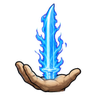
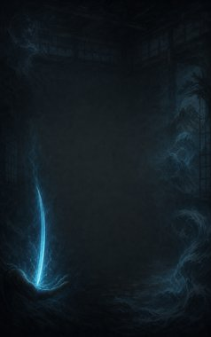
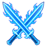
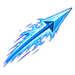
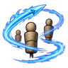

Chakra Ken (chakra sword) A
A-rank. A blade of pure chakra cuts one enemy through any armour.
| Rank | Chakra | Cooldown | Class level |
|---|---|---|---|
| A | 55 | 50 s | 13 |

Technique trees › Universal ninjutsu
4 techniques · Ninjutsu tab
Learned from technique scrolls, mission rewards, written scrolls and scroll merchants; some NPC ninja know it. It counts toward the ninja build like other trees.

A-rank. A blade of pure chakra cuts one enemy through any armour.
| Rank | Chakra | Cooldown | Class level |
|---|---|---|---|
| A | 55 | 50 s | 13 |

B-rank. A chakra blade in each hand for a fight.
| Rank | Chakra | Cooldown | Class level |
|---|---|---|---|
| B | 35 | 25 s | 9 |

C-rank. Throw a chakra javelin through everyone in a line.
| Rank | Chakra | Cooldown | Class level |
|---|---|---|---|
| C | 20 | 15 s | 5 |

S-rank. S-rank. Steer the javelin through every enemy in a long line.
| Rank | Chakra | Cooldown | Class level |
|---|---|---|---|
| S | 90 | 200 s | 18 |